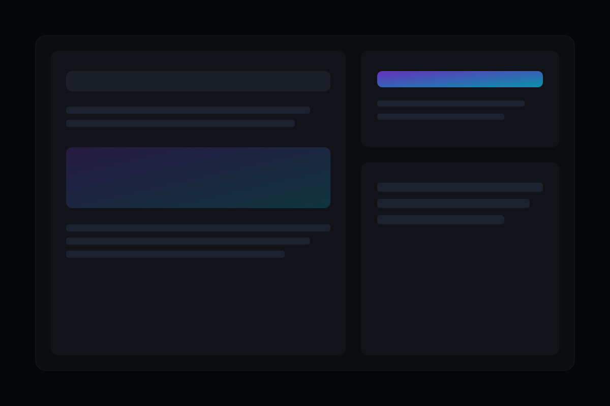

Quando aplicar
Quando há muitas iniciativas em paralelo e falta clareza sobre prioridade, esforço e retorno.

Consultoria Estratégica
Apoiamos decisões de arquitetura, produto e operação para que seu investimento em tecnologia tenha impacto mensurável.
Quando há muitas iniciativas em paralelo e falta clareza sobre prioridade, esforço e retorno.
Decisão mais rápida, menos desperdício de esforço e alinhamento entre liderança e time técnico.
Construa um plano claro para evoluir sistemas, times e resultados sem perder foco operacional.